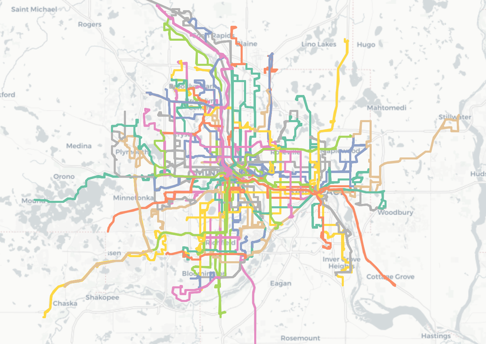
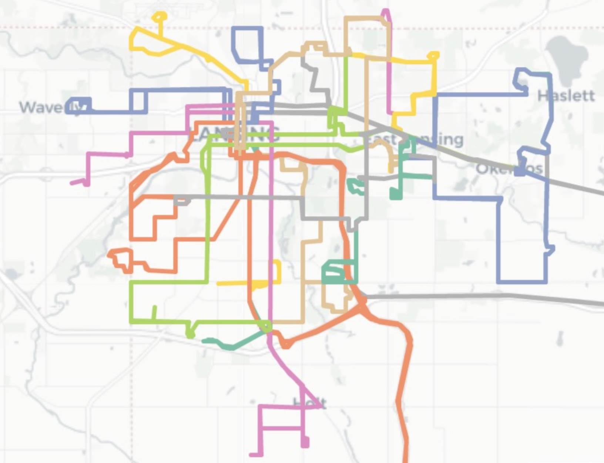

Overview of St. Louis routes network
- Here is an overview of all the bus routes in St. Louis, MO:

The ten census centroids with the highest service scores:
For this project, we would like to understand how different services (banks, clinics, dentistries, hospitals, and supermarkets) are distributed in a city and whether people can reach to the same level of services when they take buses. Take Madison as an example, among all the two hundred fifty thousand people living in different census blocks in Madison, how do we know whether anyone from any census blocks can get to the same level of services when they take buses. Services are distributed well in a city if anyone from any place can reach to the same level of services when they take buses. In this project, we are going to explore four different cities: Madison WI, St.Louis MO, Minneapolis MN, Lansing MI.
def get_sigmoid(x):
return 1/(1+math.e**(-x)) - 0.5
def get_score(banks=0, clinics=0, dentists=0, hospitals=0, supermarkets=0):
score = get_sigmoid(banks) + get_sigmoid(clinics) + get_sigmoid(hospitals) + get_sigmoid(dentists) + get_sigmoid(supermarkets)
return score
Overview of Madison routes network
The ten census centroids with the highest service scores:
| label | max score | min score | median score | |
|---|---|---|---|---|
| 0 | 1652 Meadowcrest Lane | 8.63154 | 0 | 4.59358 |
| 1 | SSM Physician Parking Fish Hatchery Road | 27.3281 | 0 | 20.3445 |
| 2 | Sheboygan-Segoe Sheboygan Avenue | 32.3336 | 0 | 24.2205 |
| 3 | 7109 Colony Drive | 12.7064 | 0 | 7.91297 |
| 4 | Nevin Springs State Fishery and Wildlife Area Cahill Main | 4.52522 | 0 | 0 |
| 5 | American Family Insurance Madison | 1.82843 | 0 | 0 |
| 6 | 4147 Terminal Drive | 0 | 0 | 0 |
| 7 | 2998 Columbia Road | 31.7218 | 0 | 26.2291 |
| 8 | 9375 Spirit Street | 0 | 0 | 0 |
| 9 | 6179 Research Park Boulevard | 22.2021 | 0 | 16.9148 |
| label | max score | min score | median score | |
|---|---|---|---|---|
| 0 | 465 Davies Street | 10.6045 | 0 | 3.78525 |
| 1 | 2133 Keyes Avenue | 25.6982 | 0 | 19.2128 |
| 2 | 410 Pawling Street | 19.2096 | 0 | 17.8433 |
| 3 | 3907 Hynek Road | 16.9268 | 0 | 16.0026 |
| 4 | 770 Lamont Lane | 9.77114 | 0 | 4.24737 |
| 5 | 1196 Rowell Street | 27.3281 | 0 | 6.3546 |
| 6 | 1891 Elka Lane | 14.2808 | 0 | 6.92799 |
| 7 | University of Wisconsin Arboretum - Grady Tract Kirkwall Street | 11.5327 | 0 | 4.8177 |
| 8 | 5498 Regent Street | 17.4869 | 0 | 12.7752 |
| 9 | Odana Hills Golf Course 4635 | 19.0319 | 0 | 5.89037 |
Based on the two graphs above, we can see that no matter if a person resides in a census block with a lot of services or a census block with not so many services, they both can reach similar level of services. This is due to the highest scores for the two graphs are about the same which is around 30. The max score for the high census block graph is about 32 while the max score for the low census block graph is about 27.33. It shows that the services of the Madison is advanced enough for people from not only high score census but only the low score census to reach services. However, people from high score census blocks still can reach more services than people from low score census blocks if they take buses.
The visualization of the Madison census:
Overview of St. Louis routes network
The ten census centroids with the highest service scores:
| label | max score | min score | median score | |
|---|---|---|---|---|
| 0 | Chippewa at Regal Place Chippewa Street | 14.1783 | 0 | 11.1506 |
| 1 | Lansdowne at Chippewa Lansdowne Avenue | 10.2808 | 0 | 9.58429 |
| 2 | 6000 Lansdowne Avenue | 15.7129 | 0 | 9.66561 |
| 3 | 5406 Wise Avenue | 16.7857 | 0 | 4.28971 |
| 4 | 528 South Sarah Street | 30.3576 | 0 | 23.9757 |
| 5 | 4444 Forest Park Avenue | 33.9023 | 0 | 26.8917 |
| 6 | Grant Medical Clinic 114 | 26.8042 | 0 | 17.4304 |
| 7 | Saint Nicholas Greek Orthodox Church 4967 | 34.7062 | 0 | 26.5922 |
| 8 | 6254 Mardel Avenue | 15.8627 | 0 | 9.66561 |
| 9 | Tai Chi Single Whip Market Street | 27.2854 | 0 | 17.9747 |
| label | max score | min score | median score | |
|---|---|---|---|---|
| 0 | 5405 Holly Hills Avenue | 16.2578 | 0 | 12.5369 |
| 1 | 5424 Hancock Avenue | 14.6404 | 0 | 9.39296 |
| 2 | 4318 Potomac Street | 15.1025 | 0 | 9.23367 |
| 3 | 3640 Hydraulic Avenue | 30.8899 | 0 | 19.4305 |
| 4 | 4809 Kossuth Avenue | 10.6761 | 0 | 3.38009 |
| 5 | 4530 Lexington Avenue | 11.6687 | 0 | 2.54164 |
| 6 | Gibson Avenue McRee Place | 31.8228 | 0 | 19.7903 |
| 7 | 3626 Aldine Avenue | 31.9559 | 0 | 17.9834 |
| 8 | 3146 Locust Street | 20.0343 | 0 | 14.3896 |
| 9 | 1630 Hickory Street | 24.2817 | 0 | 17.4926 |
Based on the two graphs above, we can see that no matter if a person resides in a census block with a lot of services or a census block with not so many services, they both can reach similar level of services. This is due to the highest scores for the two graphs are about the same which is around 30. The max score for the high score census blocks is about 34.71 while the max score for the low score census block is about 31.96. It shows that the service system of the St. Louis is advanced enough for people from not only high score census but only the low score census to reach good level of services. However, people from high score census blocks still can reach more services than people from low score census blocks if they take buses.
The visualization of the St. Louis census:
Overview of Minneapolis routes network Here is an overview of all the bus routes in Minneapolis, MN:
The ten census centroids with the highest service scores:
| label | max score | min score | median score | |
|---|---|---|---|---|
| 0 | Aramsco 650 | 33.666 | 0 | 23.7619 |
| 1 | East River Road Garage 385 | 47.1004 | 0 | 35.2929 |
| 2 | Creamette Lofts North 1st Street | 56.6103 | 0 | 39.1382 |
| 3 | Red Building South 7th Street | 66.1495 | 0 | 55.2971 |
| 4 | St Catherine University 601 | 54.466 | 0 | 40.305 |
| 5 | The Bridgewater 1010 | 63.7767 | 0 | 48.37 |
| 6 | Dupont Avenue Bridge Midtown Corridor | 51.559 | 0 | 36.3442 |
| 7 | Argyle House 920 | 45.9418 | 0 | 34.0628 |
| 8 | Xcel Energy Nicollet Mall | 71.4414 | 0 | 61.5604 |
| 9 | AT&T Tower Marquette Avenue South | 73.2675 | 0 | 61.2384 |
| label | max score | min score | median score | |
|---|---|---|---|---|
| 0 | 3507 West 43rd Street | 24.3569 | 0 | 8.2247 |
| 1 | Kings Highway East Harriet | 37.2356 | 0 | 19.6234 |
| 2 | 1617 North Hillside Avenue | 22.0407 | 0 | 14.2981 |
| 3 | 5142 North Logan Avenue | 8.30602 | 0 | 1.52655 |
| 4 | Target 1650 | 29.2729 | 0 | 16.5574 |
| 5 | 2123 25th Avenue South | 54.466 | 0 | 34.6889 |
| 6 | Band Box East 14th Street | 63.2366 | 0 | 48.4055 |
| 7 | 1015 4th Avenue North | 47.2459 | 0 | 25.3748 |
| 8 | 1086 West 49th Street | 37.9288 | 0 | 20.2107 |
| 9 | 10 Russell Court | 23.345 | 0 | 9.6007 |
Based on the above two graphs, the highest max score for the high census is about 73.27 while the highest max score for the low census is about 63.24. The overall score of Minneapolis is twice as high as other three cities' score, so Mineapolis has a great service reachability. It shows that the service system of the Mineapolis is advanced enough for people from both high score census and the low score census to reach services. But high census still have more services to choose through bus transit overall because the max median score of the high census is about 13 higher than the low census.
The visualization of the Minneapolis census:
Overview of Lansing routes network Here is an overview of all the bus routes in Lansing, MI:
The ten census centroids with the highest service scores:
| label | max score | min score | median score | |
|---|---|---|---|---|
| 0 | Friedland Industries, Inc. 405 | 5.88468 | 0 | 4.19885 |
| 1 | Waycross Drive Marscot | 9.9608 | 0 | 6.40661 |
| 2 | 198 Bingham Street | 13.4466 | 0 | 11.9105 |
| 3 | 6363 Gardenia Avenue | 8.42471 | 0 | 6.40661 |
| 4 | South Lansing Pathway Kaynorth | 7.09978 | 0 | 5.36684 |
| 5 | 731 North Martin Luther King Jr Boulevard | 4.11753 | 0 | 3.04355 |
| 6 | Knapp's Center West Washtenaw Street | 13.6776 | 0 | 10.5743 |
| 7 | 718 East Cavanaugh Road | 10.0421 | 0 | 6.17555 |
| 8 | Conrad's Grill Morgan Lane | 7.03997 | 0 | 3.78525 |
| 9 | Goodtime Motors Inc Auto Wholesalers Keystone Avenue | 9.58001 | 0 | 4.98605 |
| label | max score | min score | median score | |
|---|---|---|---|---|
| 0 | 427 Seymour Avenue | 13.6776 | 0 | 10.2931 |
| 1 | 6498 Coulson Court | 7.5619 | 0 | 6.40661 |
| 2 | 1453 Lyons Avenue | 8.06381 | 0 | 7.00415 |
| 3 | 1444 Knollwood Avenue | 3.96779 | 0 | 3.73673 |
| 4 | 1417 North Jenison Avenue | 4.11753 | 0 | 2.58144 |
| 5 | 202 South Clemens Avenue | 13.4466 | 0 | 4.70949 |
| 6 | 424 West Hodge Avenue | 6.63767 | 0 | 2.54164 |
| 7 | 1449 West Ionia Street | 5.50388 | 0 | 2.11932 |
| 8 | Forest Road Lansing | 2.87231 | 0 | 2.41019 |
| 9 | I 96 Lansing | 7.33084 | 0 | 5.48237 |
Based on the two graphs above, we can see that no matter if a person resides in a census block with a lot of services or a census block with not so many services, they both can reach similar level of services. This is due to the highest scores for the two graphs are about the same which is around 13.s. The max score for the high census is about 13.67 while the max score for the low census is about 13.45. It shows that the service system of the Lansing is fair for people from both high score census and the low score census to reach services. The score of high census and low census for Lansing is almost equal, while other three cities have some difference. One possible reason is the Lansing has smaller area where bus transit could get destination easier.